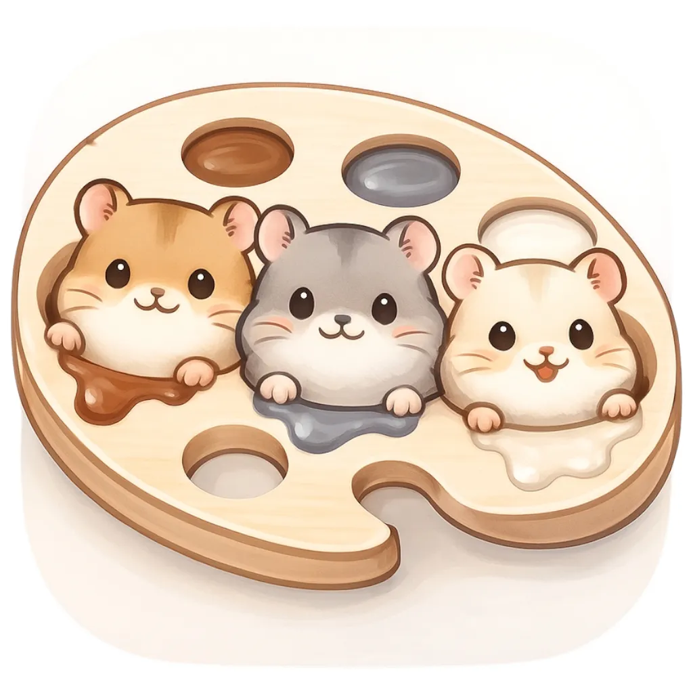

<!DOCTYPE html>
<html lang="ja">
<head>
    <meta charset="UTF-8">
    <meta name="viewport" content="width=device-width, initial-scale=1.0">
    <title>はむいろパレット ～ジャンガリアンハムスターの毛色辞典～</title>
    <meta name="description" content="ジャンガリアンハムスターの毛色を写真で確認できる辞典。22種類の毛色を写真と詳しい説明で紹介しています。">
    <link rel="icon" type="image/png" href="hamuiro.png">
    <link rel="apple-touch-icon" href="hamuiro.png">
    <meta name="theme-color" content="#f59e0b">
    <script crossorigin src="https://unpkg.com/react@18/umd/react.production.min.js"></script>
    <script crossorigin src="https://unpkg.com/react-dom@18/umd/react-dom.production.min.js"></script>
    <script src="https://unpkg.com/@babel/standalone/babel.min.js"></script>
    <style>
        * { margin: 0; padding: 0; box-sizing: border-box; }
        body { font-family: -apple-system, BlinkMacSystemFont, "Segoe UI", Roboto, "Helvetica Neue", Arial, sans-serif; }
        .container { max-width: 1200px; margin: 0 auto; }
        .bg-gradient { background: linear-gradient(135deg, #fff7ed 0%, #fef3c7 50%, #fed7aa 100%); min-height: 100vh; }
        .card { background: white; border-radius: 24px; box-shadow: 0 20px 25px -5px rgb(0 0 0 / 0.1); overflow: hidden; }
        .tab-button { flex: 1; min-width: 100px; padding: 12px 8px; font-weight: 600; border: none; background: #fffbeb; color: #92400e; cursor: pointer; transition: all 0.3s; border-bottom: 4px solid transparent; }
        .tab-button:hover { background: #fef3c7; }
        .tab-button.active { background: white; color: #78350f; border-bottom-color: #f59e0b; }
        .mode-button { display: flex; align-items: center; gap: 8px; padding: 14px 28px; border-radius: 12px; font-weight: 600; border: none; cursor: pointer; transition: all 0.3s; font-size: 15px; }
        .mode-button.active { background: linear-gradient(135deg, #f59e0b 0%, #d97706 100%); color: white; box-shadow: 0 4px 16px rgba(245, 158, 11, 0.4); }
        .mode-button.inactive { background: white; color: #92400e; box-shadow: 0 2px 8px rgba(0,0,0,0.08); }
        .mode-button.inactive:hover { background: #fef3c7; color: #78350f; }
        .gallery-item { cursor: pointer; position: relative; border-radius: 16px; overflow: hidden; box-shadow: 0 4px 6px -1px rgb(0 0 0 / 0.1); transition: all 0.3s; }
        .gallery-item:hover { box-shadow: 0 20px 25px -5px rgb(0 0 0 / 0.1); transform: scale(1.05); }
        .gallery-item img { width: 100%; height: 160px; object-fit: cover; display: block; }
        .gallery-overlay { position: absolute; inset: 0; background: linear-gradient(to top, rgba(0,0,0,0.6), transparent); display: flex; align-items: flex-end; padding: 16px; opacity: 0; transition: opacity 0.3s; }
        .gallery-item:hover .gallery-overlay { opacity: 1; }
        .detail-img { width: 100%; height: 320px; object-fit: cover; border-radius: 16px; box-shadow: 0 10px 15px -3px rgb(0 0 0 / 0.1); }
        .feature-box { background: #fffbeb; border-radius: 12px; padding: 24px; }
        .grid-2 { display: grid; grid-template-columns: 1fr; gap: 24px; }
        .grid-gallery { display: grid; grid-template-columns: repeat(2, 1fr); gap: 16px; }
        .share-buttons { display: flex; gap: 8px; justify-content: center; flex-wrap: wrap; margin: 12px 0; }
        .share-btn { display: inline-flex; align-items: center; justify-content: center; width: 36px; height: 36px; border-radius: 50%; font-size: 12px; font-weight: 600; border: none; cursor: pointer; transition: all 0.3s; color: white; text-decoration: none; }
        .share-btn:hover { transform: translateY(-2px); box-shadow: 0 4px 12px rgba(0,0,0,0.2); }
        .share-btn.twitter { background: #000000; }
        .share-btn.line { background: #06C755; }
        .share-btn.copy { background: #6B7280; }
        .share-btn.copied { background: #10B981; }
        .credit { text-align: center; padding: 16px; background: rgba(255,255,255,0.7); border-radius: 12px; margin-top: 24px; }
        .credit a { color: #92400e; font-weight: 600; text-decoration: none; }
        .credit a:hover { text-decoration: underline; }
        .float-back-btn { position: fixed; bottom: 20px; right: 20px; background: #f59e0b; color: white; border: none; border-radius: 50%; width: 56px; height: 56px; display: flex; align-items: center; justify-content: center; box-shadow: 0 4px 12px rgba(0,0,0,0.3); cursor: pointer; transition: all 0.3s; z-index: 1000; }
        .float-back-btn:hover { background: #d97706; transform: scale(1.1); }
        .float-back-btn:active { transform: scale(0.95); }
        .image-modal { position: fixed; top: 0; left: 0; right: 0; bottom: 0; background: rgba(0,0,0,0.9); display: flex; align-items: center; justify-content: center; z-index: 2000; }
        .image-modal img { max-width: 90%; max-height: 90%; object-fit: contain; }
        .image-modal-close { position: absolute; top: 20px; right: 20px; background: white; color: #78350f; border: none; border-radius: 50%; width: 40px; height: 40px; display: flex; align-items: center; justify-content: center; cursor: pointer; font-size: 24px; font-weight: bold; }
        .image-modal-close:hover { background: #fef3c7; }
        .detail-img { width: 100%; height: 320px; object-fit: contain; border-radius: 16px; box-shadow: 0 10px 15px -3px rgb(0 0 0 / 0.1); cursor: pointer; transition: transform 0.2s; background: white; user-select: none; -webkit-user-select: none; -moz-user-select: none; -ms-user-select: none; pointer-events: auto; -webkit-touch-callout: none; }
        .detail-img:hover { transform: scale(1.02); }
        .gallery-item img { user-select: none; -webkit-user-select: none; -webkit-touch-callout: none; pointer-events: auto; }
        .image-modal img { user-select: none; -webkit-user-select: none; -webkit-touch-callout: none; pointer-events: auto; }
        @media (min-width: 768px) {
            .grid-2 { grid-template-columns: repeat(2, 1fr); }
            .grid-gallery { grid-template-columns: repeat(3, 1fr); }
            .gallery-item img { height: 192px; }
            .detail-img { height: 400px; }
            .tab-button { padding: 16px; min-width: 120px; }
        }
    </style>
</head>
<body>
    <div id="root"></div>

    <script type="text/babel">
        const { useState, useRef } = React;

        const ShareButtons = ({ colorName, isTopPage }) => {
          const [copied, setCopied] = React.useState(false);
          const pageUrl = window.location.href;
          
          let shareText;
          if (isTopPage) {
            shareText = 'ジャンガリアンハムスターの毛色が写真でわかるよ。使ってみてね。\n#ハムスター #ジャンガリアンの毛色 #毛色辞典';
          } else {
            shareText = `うちのハムちゃんは、${colorName}だったよ。みんなのハムちゃんの毛色も教えてね。\n#ハムスター #ジャンガリアンの毛色 #毛色辞典`;
          }
          
          const encodedText = encodeURIComponent(shareText);
          const encodedUrl = encodeURIComponent(pageUrl);
          
          const twitterUrl = `https://twitter.com/intent/tweet?text=${encodedText}&url=${encodedUrl}`;
          const lineUrl = `https://social-plugins.line.me/lineit/share?url=${encodedUrl}&text=${encodedText}`;
          
          const copyUrl = async () => {
            try {
              await navigator.clipboard.writeText(pageUrl);
              setCopied(true);
              setTimeout(() => setCopied(false), 2000);
            } catch (err) {
              alert('URLをコピーできませんでした');
            }
          };
          
          return (
            <div className="share-buttons">
              <a href={twitterUrl} target="_blank" rel="noopener noreferrer" className="share-btn twitter" title="Xでシェア">
                <svg width="16" height="16" viewBox="0 0 24 24" fill="currentColor">
                  <path d="M18.244 2.25h3.308l-7.227 8.26 8.502 11.24H16.17l-5.214-6.817L4.99 21.75H1.68l7.73-8.835L1.254 2.25H8.08l4.713 6.231zm-1.161 17.52h1.833L7.084 4.126H5.117z"/>
                </svg>
              </a>
              <a href={lineUrl} target="_blank" rel="noopener noreferrer" className="share-btn line" title="LINEでシェア">
                <svg width="16" height="16" viewBox="0 0 24 24" fill="currentColor">
                  <path d="M19.365 9.863c.349 0 .63.285.63.631 0 .345-.281.63-.63.63H17.61v1.125h1.755c.349 0 .63.283.63.63 0 .344-.281.629-.63.629h-2.386c-.345 0-.627-.285-.627-.629V8.108c0-.345.282-.63.63-.63h2.386c.346 0 .627.285.627.63 0 .349-.281.63-.63.63H17.61v1.125h1.755zm-3.855 3.016c0 .27-.174.51-.432.596-.064.021-.133.031-.199.031-.211 0-.391-.09-.51-.25l-2.443-3.317v2.94c0 .344-.279.629-.631.629-.346 0-.626-.285-.626-.629V8.108c0-.27.173-.51.43-.595.06-.023.136-.033.194-.033.195 0 .375.104.495.254l2.462 3.33V8.108c0-.345.282-.63.63-.63.345 0 .63.285.63.63v4.771zm-5.741 0c0 .344-.282.629-.631.629-.345 0-.627-.285-.627-.629V8.108c0-.345.282-.63.63-.63.346 0 .628.285.628.63v4.771zm-2.466.629H4.917c-.345 0-.63-.285-.63-.629V8.108c0-.345.285-.63.63-.63.348 0 .63.285.63.63v4.141h1.756c.348 0 .629.283.629.63 0 .344-.282.629-.629.629M24 10.314C24 4.943 18.615.572 12 .572S0 4.943 0 10.314c0 4.811 4.27 8.842 10.035 9.608.391.082.923.258 1.058.59.12.301.079.766.038 1.08l-.164 1.02c-.045.301-.24 1.186 1.049.645 1.291-.539 6.916-4.078 9.436-6.975C23.176 14.393 24 12.458 24 10.314"/>
                </svg>
              </a>
              <button onClick={copyUrl} className={`share-btn ${copied ? 'copied' : 'copy'}`} title={copied ? 'コピー完了' : 'URLをコピー'}>
                {copied ? (
                  <svg width="16" height="16" viewBox="0 0 24 24" fill="none" stroke="currentColor" strokeWidth="2.5">
                    <polyline points="20 6 9 17 4 12"></polyline>
                  </svg>
                ) : (
                  <svg width="16" height="16" viewBox="0 0 24 24" fill="none" stroke="currentColor" strokeWidth="2">
                    <rect x="9" y="9" width="13" height="13" rx="2" ry="2"></rect>
                    <path d="M5 15H4a2 2 0 0 1-2-2V4a2 2 0 0 1 2-2h9a2 2 0 0 1 2 2v1"></path>
                  </svg>
                )}
              </button>
            </div>
          );
        };

        const HamsterColorGuide = () => {
          const [viewMode, setViewMode] = useState('tabs');
          const [selectedColor, setSelectedColor] = useState('normal');
          const [showFloatBtn, setShowFloatBtn] = useState(false);
          const [showImageModal, setShowImageModal] = useState(false);
          const [showCreditsPage, setShowCreditsPage] = useState(false);
          const [showAboutPage, setShowAboutPage] = useState(false);
          const detailRef = useRef(null);

          const handleColorSelect = (colorKey) => {
            setSelectedColor(colorKey);
            setTimeout(() => {
              if (detailRef.current && window.innerWidth < 768) {
                detailRef.current.scrollIntoView({ behavior: 'smooth', block: 'start' });
                setShowFloatBtn(true);
              }
            }, 100);
          };

          const scrollToTop = () => {
            window.scrollTo({ top: 0, behavior: 'smooth' });
            setShowFloatBtn(false);
          };

          const hamsterColors = {
  normal: {
    name: 'ノーマル',
    description: '野生色。最も一般的な毛色で、灰褐色の体に背中の黒いラインが特徴です。',
    imageUrl: 'images/normal.png',
    features: ["背中に黒い筋（ドーサルライン）", "灰褐色の体", "お腹は白っぽい"],
    genotype: 'BBMMYYWWAA BBMMYYWWAa BBMMYYWW-- BbMMYYWWAA BbMMYYWWAa BbMMYYWW-- BbMmYYWWAA BbMmYYWWAa BbMmYYWW-- BBMmYYWWAA BBMmYYWWAa BBMmYYWWaa BBMmYYWW-- BBMMYYWWaa BbMMYYWWaa BbMmYYWWaa'
  },
  bluesapphire: {
    name: 'ブルーサファイア',
    description: 'ノーマルの色が薄くなったバージョン。青みがかった灰色が美しい毛色です。',
    imageUrl: 'images/bluesapphire.png',
    features: ["青みがかった灰色", "ノーマルより淡い", "背中に筋がある"],
    genotype: 'bbMM'
  },
  mokabrown: {
    name: 'モカブラウン',
    description: 'ノーマルを薄くしたような茶色。優しい印象の毛色です。',
    imageUrl: 'images/mokabrown.png',
    features: ["茶色系", "ノーマルを薄くした色", "落ち着いた印象"],
    genotype: 'BBmm/Bbmm'
  },
  moongray: {
    name: 'ムーングレー',
    description: 'ブルサファをクリーム色にしたような色。黄目が特徴です。',
    imageUrl: 'images/moongray.png',
    features: ["グレーがかったクリーム色", "黄色い目", "柔らかな印象"],
    genotype: 'bbmmYYWWaa bbmmYYWWAA bbmmYYWWAa bbmmYYWW--'
  },
  creamysapphire: {
    name: 'クリーミーサファイア',
    description: 'プドの目。ムーングレーより若干黄色が強い。',
    imageUrl: 'images/creamysapphire.png',
    features: ["クリーミーな色合い", "ぶどう目", "黄色味が強い"],
    genotype: 'bbmmYYWWaa bbmmYYWWAA bbmmYYWWAa bbmmYYWW--'
  },
  pearl: {
    name: 'パール',
    description: '耳の後ろが黒い。黒が生先に残る白い毛色です。',
    imageUrl: 'images/pearl.png',
    features: ["白い体", "耳の後ろが黒い", "黒が先端に残る"],
    genotype: 'BMyW'
  },
  sapphirepearl: {
    name: 'サファイアパール',
    description: 'パールよりグレーの範囲が広く、ブルサファより白い。上品な印象です。',
    imageUrl: 'images/sapphirepearl.png',
    features: ["グレーの範囲が広い", "ブルサファより白い", "淡いブルーグレー"],
    genotype: 'bMyW'
  },
  whitemoka: {
    name: 'ホワイトモカ',
    description: 'ラインが薄い茶色。耳の後ろは白いこともある。',
    imageUrl: 'images/whitemoka.png',
    features: ["薄い茶色のライン", "耳の後ろは白い", "優しい色合い"],
    genotype: 'BmWw'
  },
  whitemoon: {
    name: 'ホワイトムーン',
    description: 'ほぼ白。背中の線も薄く、耳の後ろは白い。',
    imageUrl: 'images/whitemoon.png',
    features: ["ほぼ白", "背中の線も薄い", "耳の後ろは白い"],
    genotype: 'bmyW'
  },
  creamyline: {
    name: 'クリーミーライン（プディングパール）',
    description: '背中に黄色の線が特徴的な毛色です。',
    imageUrl: 'images/creamyline.png',
    features: ["背中に黄色の線", "クリーム色", "優しい印象"],
    genotype: 'BMYW'
  },
  sapphirecreamyline: {
    name: 'サファイアクリーミーライン',
    description: '白&薄いグレーの線？詳細は不明です。',
    imageUrl: 'images/sapphirecreamyline.png',
    features: ["白っぽい", "薄いグレーの線", "詳細不明"],
    genotype: 'bMYW'
  },
  creamylinemoka: {
    name: 'クリーミーラインモカ',
    description: '茶っぽい線に毛先も茶っぽい。優しい色合いです。',
    imageUrl: 'images/creamylinemoka.png',
    features: ["茶色の線", "毛先も茶色", "柔らかな印象"],
    genotype: 'BmYW'
  },
  creamylinemoon: {
    name: 'クリーミーラインムーン',
    description: '見た目はほぼクリーミーラインだが、線が薄かったり薄い。目の後ろは白い。',
    imageUrl: 'images/creamylinemoon.png',
    features: ["クリーミーラインに似る", "線が薄い", "目の後ろは白い"],
    genotype: 'bmYW'
  },
  pudding: {
    name: 'プディング',
    description: '子どもの頃は黄色。大人になると黄緑茶系になり、目っぽくなる子も。',
    imageUrl: 'images/pudding.png',
    features: ["子どもは黄色", "成長すると黄緑茶系", "目が赤っぽい場合も"],
    genotype: 'BMYw'
  },
  'sapphirepudding-milktea': {
    name: 'サファイアプディング（ミルクティー）',
    description: 'プディングのようにまたはほぼサファイアのようにいずれかの系・黄色や青色が優勢。背に淡い黄緑ミルクティー。',
    imageUrl: 'images/sapphirepudding-milktea.png',
    features: ["ミルクティー色", "プディングとサファイアの中間", "淡い色合い"],
    genotype: 'bMYw'
  },
  'sapphirepudding-normal': {
    name: 'サファイアプディング（ノーマル）',
    description: 'サファイアプディングの標準的なタイプ。',
    imageUrl: 'images/sapphirepudding-normal.png',
    features: ["標準的な色合い", "バランスの取れた色", "中間的な印象"],
    genotype: ''
  },
  'sapphirepudding-beige': {
    name: 'サファイアプディング（ベージュ）',
    description: 'ベージュ寄りのサファイアプディング。',
    imageUrl: 'images/sapphirepudding-beige.png',
    features: ["ベージュ系", "柔らかい色合い", "優しい印象"],
    genotype: ''
  },
  'sapphirepudding-brown': {
    name: 'サファイアプディング（ブラウン）',
    description: 'ブラウン寄りのサファイアプディング。',
    imageUrl: 'images/sapphirepudding-brown.png',
    features: ["ブラウン系", "濃いめの色合い", "落ち着いた印象"],
    genotype: ''
  },
  yellowmoka: {
    name: 'イエローモカ（フレッシュ）',
    description: '茶より濃い黄緑色。色は生涯は変わらない。',
    imageUrl: 'images/yellowmoka.png',
    features: ["濃い黄緑色", "色は変わらない", "茶色より濃い"],
    genotype: 'BmYw'
  },
  yellowmoon: {
    name: 'イエロームーン',
    description: 'かなり薄い白に近い黄色。背中の線も薄く、ほぼ白に近い。',
    imageUrl: 'images/yellowmoon.png',
    features: ["白に近い薄い黄色", "背中の線も薄い", "ほぼ白"],
    genotype: 'bmYw'
  },
  snowwhite: {
    name: 'スノーホワイト',
    description: '背中の線もない真っ白な個体。ブルサファの突然変異ともいわれるが、詳細不明。',
    imageUrl: 'images/snowwhite.png',
    features: ["真っ白", "背中の線なし", "耳には色あり"],
    genotype: '---'
  },
  rubyeyemokabrown: {
    name: 'ルビーアイモカブラウン',
    description: 'ルビーアイのモカブラウン。普通のモカブラウンよりも少し色が薄くなることも。',
    imageUrl: 'images/rubyeyemokabrown.png',
    features: ["耳には少し色が入ることも", "茶色の毛色", "背中の線くっきりめ"],
    genotype: 'BBmmrr'
  },
  rubyeyeyellowmoka: {
    name: 'ルビーアイイエローモカ',
    description: 'ルビーアイのイエローモカ。赤い目と黄色の毛色が特徴です。背中の線はくっきりめ',
    imageUrl: 'images/rubyeyeyellowmoka.png',
    features: ["耳には少し色が入ることも", "黄色", "背中の線くっきりめ"],
    genotype: 'BmYwrr'
  },
  rubyeyecreamylinemoka: {
    name: 'ルビーアイクリーミーラインモカ',
    description: 'ルビーアイのクリーミーラインモカ。赤い目と茶色の線が特徴で、背中以外にも茶色の毛が入ることも。',
    imageUrl: 'images/rubyeyecreamylinemoka.png',
    features: ["耳には少し色が入ることも", "ほぼ白に茶色混じり", "背中の線くっきりめ"],
    genotype: 'BmYWrr'
  },
  rubyeyewhitemoka: {
    name: 'ルビーアイホワイトモカ',
    description: 'ルビーアイのホワイトモカ。薄い茶色のラインが特徴で、背中以外にも茶色の毛が入ることも。',
    imageUrl: 'images/rubyeyewhitemoka.png',
    features: ["耳には少し色が入ることも", "ほぼ白に茶色混じり", "背中の線くっきりめ"],
    genotype: 'BmWwrr'
  },
  rubyeyemoon: {
    name: 'ルビーアイムーングレー',
    description: 'ルビーアイのムーングレー。毛色は黒目よりも薄くなりがちです。背中の線はあまり見えない。',
    imageUrl: 'images/rubyeyemoon.png',
    features: ["赤い目（ルビーアイ）", "背中の線もごく薄い", "耳の後ろは白い"],
    genotype: 'bmywrr'
  },
  rubyeyeyellowmoon: {
    name: 'ルビーアイイエロームーン',
    description: 'ルビーアイのイエロームーン。ほぼ白に近い薄い黄色が特徴です。光の当たり方によっては白く見えることも。',
    imageUrl: 'images/rubyeyeyellowmoon.png',
    features: ["赤い目（ルビーアイ）", "背中の線もごく薄い", "耳の後ろは白い"],
    genotype: 'bmYwrr'
  },
  rubyeyecreamylinemoon: {
    name: 'ルビーアイクリーミーラインムーン',
    description: 'ルビーアイのクリーミーラインムーン。黄土色、黄みよりの薄い背中の線。体毛はほぼ白です。',
    imageUrl: 'images/rubyeyecreamylinemoon.png',
    features: ["赤い目（ルビーアイ）", "黄みよりのごく薄い背中の線", "耳の後ろは白い"],
    genotype: 'bmYWrr'
  },
  rubyeyewhitemoon: {
    name: 'ルビーアイホワイトムーン',
    description: 'ルビーアイのホワイトムーン。ほぼ白の毛色が特徴です。耳の後ろも白く、背中の線はほぼ見えません。',
    imageUrl: 'images/rubyeyewhitemoon.png',
    features: ["赤い目（ルビーアイ）", "背中の線はほぼ見えない", "耳の後ろは白い"],
    genotype: 'bmyWrr'
  },
  blackjungarian: {
    name: 'ブラックジャンガリアン',
    description: '黒い毛色のジャンガリアンハムスター。希少な毛色です。',
    imageUrl: 'images/blackjungarian.png',
    features: ["黒い体", "希少な毛色", "濃い色合い"],
    genotype: '---'
  },
  russianblue: {
    name: 'ロシアンブルー',
    description: 'ブラックジャンガリアンの色が薄くなったバージョン。青みがかったグレーが特徴です。',
    imageUrl: 'images/russianblue.png',
    features: ["青みがかったグレー", "ブラックより薄い", "落ち着いた色"],
    genotype: '---'
  },
  pandajungarian: {
    name: 'ブラックパンダジャンガリアン',
    description: 'ブラック遺伝子＋パイド？白と黒の境界線がはっきりしたまだら模様が特徴です。',
    imageUrl: 'images/pandajungarian.png',
    features: ["白黒がくっきり", "パンダのような模様", "希少"],
    genotype: '---'
  },
  bluepandajungarian: {
    name: 'ブルーパンダジャンガリアン',
    description: 'ブラック遺伝子＋パイド＋サファイア？白とブルーの境界線がはっきりしたまだら模様が特徴です。',
    imageUrl: 'images/bluepandajungarian.png',
    features: ["白ブルーがくっきり", "パンダのような模様", "希少"],
    genotype: '---'
  },
  blackmearl: {
    name: 'ブラックマール',
    description: 'サファイアパールのブラックキャリア？詳細は不明です。パンダよりも全体が明るく、ふわっとした見た目。',
    imageUrl: 'images/blackmearl.png',
    features: ["白が多い", "にじんだ境界", "霜降り／マーブル調"],
    genotype: '---'
  },
  bluemearl: {
    name: 'ブルーマール',
    description: 'サファイアパールのブルーキャリア？詳細は不明です。パンダよりも全体が明るく、ふわっとした見た目。',
    imageUrl: 'images/bluemearl.png',
    features: ["白が多い", "にじんだ境界", "霜降り／マーブル調"],
    genotype: ''
  },
  pied: {
    name: 'パイド（まだら模様）',
    description: '様々な毛色にまだら模様が現れたもの。模様の入り方は個体差が大きい。',
    imageUrl: 'images/pied.png',
    features: ["まだら模様", "様々な毛色に現れる", "個体差が大きい"],
    genotype: '---'
  },
  winterwhite: {
    name: 'ウィンターホワイト（冬毛）',
    description: 'ジャンガリアンは冬になると白くなる個体もいます。日照時間が短くなることに関係しており、3～4ヶ月で元に戻ります。',
    imageUrl: 'images/winterwhite.png',
    features: ["冬に白くなる", "たぬき顔になる", "3～4ヶ月で元に戻る"],
    genotype: '---'
  },
          };
          const colorKeys = Object.keys(hamsterColors);

          return (
            <div className="bg-gradient" style={{padding: '16px'}}>
              <div className="container">
                <div style={{textAlign: 'center', marginBottom: '32px'}}>
                  <div style={{display: 'flex', justifyContent: 'center', alignItems: 'center', gap: '16px', marginBottom: '16px'}}>
                    
                    <div style={{textAlign: 'left'}}>
                      <h1 style={{fontSize: '32px', fontWeight: 'bold', background: 'linear-gradient(135deg, #f59e0b 0%, #d97706 100%)', WebkitBackgroundClip: 'text', WebkitTextFillColor: 'transparent', backgroundClip: 'text', marginBottom: '4px', lineHeight: '1.2', letterSpacing: '0.5px'}}>
                        はむいろパレット
                      </h1>
                      <p style={{fontSize: '13px', color: '#78350f', margin: 0, fontWeight: '500'}}>～ジャンガリアンハムスターの毛色辞典～</p>
                    </div>
                  </div>
                  <p style={{color: '#92400e', fontSize: '15px', fontWeight: '500', marginBottom: '16px'}}>あなたのハムちゃんの毛色を見つけよう</p>
                  <ShareButtons isTopPage={true} />
                  <div style={{display: 'flex', gap: '12px', marginTop: '16px', justifyContent: 'center', flexWrap: 'wrap'}}>
                    <button
                      onClick={() => setShowAboutPage(true)}
                      style={{
                        padding: '10px 20px',
                        background: 'white',
                        border: '2px solid #f59e0b',
                        borderRadius: '8px',
                        color: '#f59e0b',
                        fontSize: '14px',
                        fontWeight: '600',
                        cursor: 'pointer',
                        display: 'flex',
                        alignItems: 'center',
                        gap: '6px'
                      }}
                    >
                      <svg width="18" height="18" viewBox="0 0 24 24" fill="none" stroke="currentColor" strokeWidth="2">
                        <circle cx="12" cy="12" r="10"></circle>
                        <line x1="12" y1="16" x2="12" y2="12"></line>
                        <line x1="12" y1="8" x2="12.01" y2="8"></line>
                      </svg>
                      この辞典について
                    </button>
                    <button
                      onClick={() => setShowCreditsPage(true)}
                      style={{
                        padding: '10px 20px',
                        background: 'white',
                        border: '2px solid #f59e0b',
                        borderRadius: '8px',
                        color: '#f59e0b',
                        fontSize: '14px',
                        fontWeight: '600',
                        cursor: 'pointer',
                        display: 'flex',
                        alignItems: 'center',
                        gap: '6px'
                      }}
                    >
                      <svg width="18" height="18" viewBox="0 0 24 24" fill="none" stroke="currentColor" strokeWidth="2">
                        <path d="M21 15v4a2 2 0 0 1-2 2H5a2 2 0 0 1-2-2v-4"></path>
                        <polyline points="7 10 12 15 17 10"></polyline>
                        <line x1="12" y1="15" x2="12" y2="3"></line>
                      </svg>
                      写真提供について
                    </button>
                  </div>
                </div>

                <div style={{display: 'flex', justifyContent: 'center', gap: '12px', marginBottom: '32px', flexWrap: 'wrap'}}>
                  <button
                    onClick={() => setViewMode('tabs')}
                    className={`mode-button ${viewMode === 'tabs' ? 'active' : 'inactive'}`}
                  >
                    <svg width="20" height="20" viewBox="0 0 24 24" fill="none" stroke="currentColor" strokeWidth="2">
                      <line x1="8" y1="6" x2="21" y2="6"></line>
                      <line x1="8" y1="12" x2="21" y2="12"></line>
                      <line x1="8" y1="18" x2="21" y2="18"></line>
                      <line x1="3" y1="6" x2="3.01" y2="6"></line>
                      <line x1="3" y1="12" x2="3.01" y2="12"></line>
                      <line x1="3" y1="18" x2="3.01" y2="18"></line>
                    </svg>
                    毛色名から探す
                  </button>
                  <button
                    onClick={() => setViewMode('gallery')}
                    className={`mode-button ${viewMode === 'gallery' ? 'active' : 'inactive'}`}
                  >
                    <svg width="20" height="20" viewBox="0 0 24 24" fill="none" stroke="currentColor" strokeWidth="2">
                      <rect x="3" y="3" width="7" height="7"></rect>
                      <rect x="14" y="3" width="7" height="7"></rect>
                      <rect x="14" y="14" width="7" height="7"></rect>
                      <rect x="3" y="14" width="7" height="7"></rect>
                    </svg>
                    写真から探す
                  </button>
                </div>

                {viewMode === 'tabs' && (
                  <div className="card">
                    <div style={{display: 'flex', flexWrap: 'wrap', borderBottom: '1px solid #fde68a'}}>
                      {colorKeys.map((key) => (
                        <button
                          key={key}
                          onClick={() => handleColorSelect(key)}
                          className={`tab-button ${selectedColor === key ? 'active' : ''}`}
                        >
                          {hamsterColors[key].name}
                        </button>
                      ))}
                    </div>

                    <div style={{padding: '24px'}} ref={detailRef}>
                      <div className="grid-2">
                        <div>
                           setShowImageModal(true)}
                            onContextMenu={(e) => e.preventDefault()}
                            onDragStart={(e) => e.preventDefault()}
                          />
                          <div style={{display: 'flex', justifyContent: 'space-between', marginTop: '16px', gap: '12px'}}>
                            <button
                              onClick={() => {
                                const currentIndex = colorKeys.indexOf(selectedColor);
                                const prevIndex = currentIndex === 0 ? colorKeys.length - 1 : currentIndex - 1;
                                setSelectedColor(colorKeys[prevIndex]);
                                if (detailRef.current && window.innerWidth < 768) {
                                  detailRef.current.scrollIntoView({ behavior: 'smooth', block: 'start' });
                                }
                              }}
                              style={{
                                flex: 1,
                                padding: '12px',
                                background: 'white',
                                border: '2px solid #f59e0b',
                                borderRadius: '8px',
                                color: '#f59e0b',
                                fontWeight: '600',
                                cursor: 'pointer',
                                display: 'flex',
                                alignItems: 'center',
                                justifyContent: 'center',
                                gap: '8px'
                              }}
                            >
                              <svg width="20" height="20" viewBox="0 0 24 24" fill="none" stroke="currentColor" strokeWidth="2">
                                <polyline points="15 18 9 12 15 6"></polyline>
                              </svg>
                              前の毛色
                            </button>
                            <button
                              onClick={() => {
                                const currentIndex = colorKeys.indexOf(selectedColor);
                                const nextIndex = currentIndex === colorKeys.length - 1 ? 0 : currentIndex + 1;
                                setSelectedColor(colorKeys[nextIndex]);
                                if (detailRef.current && window.innerWidth < 768) {
                                  detailRef.current.scrollIntoView({ behavior: 'smooth', block: 'start' });
                                }
                              }}
                              style={{
                                flex: 1,
                                padding: '12px',
                                background: 'white',
                                border: '2px solid #f59e0b',
                                borderRadius: '8px',
                                color: '#f59e0b',
                                fontWeight: '600',
                                cursor: 'pointer',
                                display: 'flex',
                                alignItems: 'center',
                                justifyContent: 'center',
                                gap: '8px'
                              }}
                            >
                              次の毛色
                              <svg width="20" height="20" viewBox="0 0 24 24" fill="none" stroke="currentColor" strokeWidth="2">
                                <polyline points="9 18 15 12 9 6"></polyline>
                              </svg>
                            </button>
                          </div>
                        </div>

                        <div>
                          <h2 style={{fontSize: '24px', fontWeight: 'bold', color: '#78350f', marginBottom: '16px'}}>
                            {hamsterColors[selectedColor].name}
                          </h2>
                          <p style={{color: '#374151', fontSize: '16px', lineHeight: '1.6', marginBottom: '24px'}}>
                            {hamsterColors[selectedColor].description}
                          </p>
                          
                          <div className="feature-box">
                            <h3 style={{fontWeight: 'bold', color: '#78350f', marginBottom: '12px', display: 'flex', alignItems: 'center', gap: '8px'}}>
                              <svg width="20" height="20" viewBox="0 0 24 24" fill="none" stroke="currentColor" strokeWidth="2">
                                <circle cx="11" cy="11" r="8"></circle>
                                <path d="m21 21-4.35-4.35"></path>
                              </svg>
                              特徴
                            </h3>
                            <ul style={{listStyle: 'none', marginBottom: '16px'}}>
                              {hamsterColors[selectedColor].features.map((feature, idx) => (
                                <li key={idx} style={{display: 'flex', gap: '8px', marginBottom: '8px', color: '#374151'}}>
                                  <span style={{color: '#f59e0b'}}>•</span>
                                  <span>{feature}</span>
                                </li>
                              ))}
                            </ul>
                            <div style={{paddingTop: '16px', borderTop: '1px solid #fde68a'}}>
                              <ShareButtons colorName={hamsterColors[selectedColor].name} isTopPage={false} />
                            </div>
                          </div>
                        </div>
                      </div>
                    </div>
                  </div>
                )}

                {viewMode === 'gallery' && (
                  <div className="card" style={{padding: '24px'}}>
                    <h2 style={{fontSize: '22px', fontWeight: 'bold', color: '#78350f', marginBottom: '24px', textAlign: 'center'}}>
                      似ている子をクリックしてね
                    </h2>
                    <div className="grid-gallery">
                      {colorKeys.map((key) => (
                        <div
                          key={key}
                          onClick={() => {
                            setSelectedColor(key);
                            setViewMode('tabs');
                            setShowFloatBtn(true);
                            window.scrollTo({ top: 0, behavior: 'smooth' });
                            setTimeout(() => {
                              if (detailRef.current) {
                                detailRef.current.scrollIntoView({ behavior: 'smooth', block: 'start' });
                              }
                            }, 300);
                          }}
                        >
                          <div className="gallery-item">
                             e.preventDefault()}
                              onDragStart={(e) => e.preventDefault()}
                            />
                            <div className="gallery-overlay">
                              <p style={{color: 'white', fontWeight: 'bold', fontSize: '16px'}}>
                                {hamsterColors[key].name}
                              </p>
                            </div>
                          </div>
                          <p style={{textAlign: 'center', marginTop: '12px', fontWeight: '600', color: '#78350f'}}>
                            {hamsterColors[key].name}
                          </p>
                        </div>
                      ))}
                    </div>
                  </div>
                )}

                <div style={{marginTop: '32px', textAlign: 'center', fontSize: '13px', color: '#92400e', background: 'rgba(255,255,255,0.5)', borderRadius: '12px', padding: '16px'}}>
                  ※ 写真はイメージです。個体によって毛色の濃淡には差があります。<br />
                  ※ 成長とともに毛色が変化することもあります。
                </div>
                
                <div className="credit">
                  <p style={{fontSize: '14px', color: '#78350f', marginBottom: '8px'}}>
                    作成：<a href="https://www.youtube.com/@hamuchira" target="_blank" rel="noopener noreferrer">もっと！はむチラ長屋ch.</a>
                  </p>
                  <p style={{fontSize: '12px', color: '#92400e'}}>
                    ジャンガリアンハムスターの個性にフォーカスした動画、飼育情報などを発信しています
                  </p>
                </div>

                {showFloatBtn && viewMode === 'tabs' && (
                  <button onClick={scrollToTop} className="float-back-btn">
                    <svg width="28" height="28" viewBox="0 0 24 24" fill="none" stroke="currentColor" strokeWidth="2.5" strokeLinecap="round" strokeLinejoin="round">
                      <path d="M12 19V5M5 12l7-7 7 7"/>
                    </svg>
                  </button>
                )}

                {showImageModal && (
                  <div className="image-modal" onClick={() => setShowImageModal(false)}>
                    <button className="image-modal-close" onClick={() => setShowImageModal(false)}>×</button>
                     e.stopPropagation()}
                      onContextMenu={(e) => e.preventDefault()}
                      onDragStart={(e) => e.preventDefault()}
                    />
                  </div>
                )}

                {showCreditsPage && (
                  <div className="image-modal" onClick={() => setShowCreditsPage(false)}>
                    <div 
                      onClick={(e) => e.stopPropagation()} 
                      style={{
                        background: 'white',
                        borderRadius: '16px',
                        padding: '32px',
                        maxWidth: '600px',
                        maxHeight: '90vh',
                        overflow: 'auto',
                        position: 'relative'
                      }}
                    >
                      <button 
                        className="image-modal-close" 
                        onClick={() => setShowCreditsPage(false)}
                        style={{position: 'absolute', top: '16px', right: '16px'}}
                      >
                        ×
                      </button>
                      
                      <h2 style={{fontSize: '24px', fontWeight: 'bold', color: '#78350f', marginBottom: '24px', textAlign: 'center'}}>
                        写真提供について
                      </h2>

                      <div style={{marginBottom: '32px'}}>
                        <h3 style={{fontSize: '18px', fontWeight: 'bold', color: '#78350f', marginBottom: '16px'}}>
                          📷 写真提供者様
                        </h3>
                        <div style={{background: 'linear-gradient(135deg, #fff7ed 0%, #fef3c7 100%)', borderRadius: '12px', padding: '20px', marginBottom: '16px'}}>
                          <p style={{fontSize: '16px', fontWeight: 'bold', color: '#78350f', marginBottom: '8px'}}>
                            緋葵とはむちゃんねる 様
                          </p>
                          <div style={{display: 'flex', gap: '12px', flexWrap: 'wrap'}}>
                            <a href="https://x.com/Himari_hamuhamu" target="_blank" rel="noopener noreferrer" style={{color: '#f59e0b', textDecoration: 'none', fontSize: '14px'}}>
                              🐦 X (Twitter)
                            </a>
                            <a href="https://www.youtube.com/@himari_1122hamu" target="_blank" rel="noopener noreferrer" style={{color: '#f59e0b', textDecoration: 'none', fontSize: '14px'}}>
                              ▶️ YouTube
                            </a>
                          </div>
                        </div>
                        <p style={{fontSize: '14px', color: '#92400e', textAlign: 'center'}}>
                          素敵な写真をご提供いただき、ありがとうございます！
                        </p>
                      </div>

                      <div style={{background: '#fef3c7', borderRadius: '12px', padding: '24px', marginBottom: '24px'}}>
                        <h3 style={{fontSize: '18px', fontWeight: 'bold', color: '#78350f', marginBottom: '16px', textAlign: 'center'}}>
                          🙏 写真提供を募集しています
                        </h3>
                        <p style={{fontSize: '14px', color: '#374151', lineHeight: '1.8', marginBottom: '8px'}}>
                          はむいろパレットをより充実させるため、<strong style={{color: '#f59e0b'}}>現在「No Image」表示の毛色</strong>のジャンガリアンハムスターの写真を募集しています。
                        </p>
                        <p style={{fontSize: '13px', color: '#92400e', marginBottom: '16px'}}>
                          ※すでに写真が掲載されている毛色は募集対象外です
                        </p>
                        
                        <div style={{marginBottom: '20px'}}>
                          <h4 style={{fontSize: '15px', fontWeight: 'bold', color: '#78350f', marginBottom: '8px'}}>
                            提供方法
                          </h4>
                          <p style={{fontSize: '14px', color: '#374151', marginBottom: '8px'}}>
                            以下のアカウントにDMで写真をお送りください：
                          </p>
                          <div style={{display: 'flex', gap: '12px', flexWrap: 'wrap', marginLeft: '8px'}}>
                            <a href="https://x.com/86star2020" target="_blank" rel="noopener noreferrer" style={{color: '#f59e0b', textDecoration: 'none', fontSize: '14px'}}>
                              🐦 X (Twitter)
                            </a>
                            <a href="https://www.instagram.com/86star2020/" target="_blank" rel="noopener noreferrer" style={{color: '#f59e0b', textDecoration: 'none', fontSize: '14px'}}>
                              📸 Instagram
                            </a>
                          </div>
                        </div>

                        <div style={{background: 'white', borderRadius: '8px', padding: '16px', marginBottom: '16px'}}>
                          <h4 style={{fontSize: '15px', fontWeight: 'bold', color: '#78350f', marginBottom: '12px'}}>
                            ⚠️ 重要事項
                          </h4>
                          <ul style={{fontSize: '13px', color: '#374151', lineHeight: '1.8', paddingLeft: '20px', margin: 0}}>
                            <li>提供いただいた写真は「はむいろパレット」のみで使用します</li>
                            <li>色調整やトリミングなどの編集を行う場合があります</li>
                            <li>将来的に冊子化する可能性があるため、冊子掲載もOKな写真をお願いします</li>
                            <li>提供者様のお名前とアカウントを掲載させていただきます</li>
                          </ul>
                        </div>

                        <p style={{fontSize: '13px', color: '#92400e', textAlign: 'center', marginTop: '16px'}}>
                          皆様のご協力をお待ちしています！
                        </p>
                      </div>

                      <button
                        onClick={() => setShowCreditsPage(false)}
                        style={{
                          width: '100%',
                          padding: '12px',
                          background: 'linear-gradient(135deg, #f59e0b 0%, #d97706 100%)',
                          border: 'none',
                          borderRadius: '8px',
                          color: 'white',
                          fontSize: '16px',
                          fontWeight: '600',
                          cursor: 'pointer'
                        }}
                      >
                        閉じる
                      </button>
                    </div>
                  </div>
                )}

                {showAboutPage && (
                  <div className="image-modal" onClick={() => setShowAboutPage(false)}>
                    <div 
                      onClick={(e) => e.stopPropagation()} 
                      style={{
                        background: 'white',
                        borderRadius: '16px',
                        padding: '32px',
                        maxWidth: '700px',
                        maxHeight: '90vh',
                        overflow: 'auto',
                        position: 'relative'
                      }}
                    >
                      <button 
                        className="image-modal-close" 
                        onClick={() => setShowAboutPage(false)}
                        style={{position: 'absolute', top: '16px', right: '16px'}}
                      >
                        ×
                      </button>
                      
                      <h2 style={{fontSize: '24px', fontWeight: 'bold', color: '#78350f', marginBottom: '24px', textAlign: 'center'}}>
                        この辞典について
                      </h2>

                      <div style={{fontSize: '15px', color: '#374151', lineHeight: '1.9'}}>
                        <section style={{marginBottom: '32px'}}>
                          <h3 style={{fontSize: '18px', fontWeight: 'bold', color: '#f59e0b', marginBottom: '12px', display: 'flex', alignItems: 'center', gap: '8px'}}>
                            ✦ この辞典で扱う毛色の前提
                          </h3>
                          <p style={{marginBottom: '12px'}}>
                            この毛色辞典「はむいろパレット」では、<strong>外見からジャンガリアンとして見分けられる姿・顔つき・体型を持つ個体</strong>を基準に、その子たちから観察される毛色をまとめています。
                          </p>
                          <p>
                            ここで扱う名前・分類は、血統の純潔性を証明するためのものではなく、あくまで<strong>「ジャンガリアンとしての外見を持つ個体の毛色」</strong>を整理したものです。
                          </p>
                        </section>

                        <section style={{marginBottom: '32px'}}>
                          <h3 style={{fontSize: '18px', fontWeight: 'bold', color: '#f59e0b', marginBottom: '12px', display: 'flex', alignItems: 'center', gap: '8px'}}>
                            ✦ ジャンガリアンは、基本3色しかいない？
                          </h3>
                          <p style={{marginBottom: '12px'}}>
                            学術的・原種としてのジャンガリアン（Phodopus sungorus）には、古くから知られている<strong>ノーマル・ブルーサファイア・パールホワイトの3色</strong>が確立した毛色として存在しています。
                          </p>
                          <p style={{marginBottom: '12px'}}>
                            しかし現在、飼育下ではこれら以外にも多くの毛色が見られます。その理由としては、
                          </p>
                          <ul style={{paddingLeft: '24px', marginBottom: '12px'}}>
                            <li>①飼育下で起きた突然変異</li>
                            <li>②ジャンガリアン系統同士の長年の掛け合わせによる多様化</li>
                          </ul>
                          <p style={{marginBottom: '12px'}}>
                            といった、自然な品種発展によるものが挙げられます。
                          </p>
                          <p>
                            一方で、過去の流通過程において、ジャンガリアンとキャンベルの交雑（ハイブリッド）が含まれる系統も存在しており、現代では「外見がジャンガリアンの個体」であっても、完全に純血のジャンガリアンと断定することが難しい側面があります。
                          </p>
                        </section>

                        <section style={{marginBottom: '32px'}}>
                          <h3 style={{fontSize: '18px', fontWeight: 'bold', color: '#f59e0b', marginBottom: '12px', display: 'flex', alignItems: 'center', gap: '8px'}}>
                            ✦ 色だけで純血／ハイブリッドを判断するのはナンセンス
                          </h3>
                          <p style={{marginBottom: '12px'}}>
                            よく、
                          </p>
                          <div style={{background: '#fef3c7', padding: '12px', borderRadius: '8px', marginBottom: '12px'}}>
                            <p style={{margin: 0, fontSize: '14px'}}>「ノーマル・ブルサファ・パール＝純ジャンガリアン」</p>
                            <p style={{margin: 0, fontSize: '14px'}}>「その他の色＝ハイブリッド」</p>
                          </div>
                          <p style={{marginBottom: '12px'}}>
                            と誤解されることがあります。しかし実際には、
                          </p>
                          <ul style={{paddingLeft: '24px', marginBottom: '12px'}}>
                            <li>モカブラウンやムーングレーからノーマル・ブルサファ・パールが生まれる</li>
                            <li>ブルサファ同士でも、背後に持つ遺伝子で多様なカラーが現れうる</li>
                          </ul>
                          <p style={{marginBottom: '12px'}}>
                            など、今や毛色だけで純血かどうかを判別できません。
                          </p>
                          <p>
                            毛色はあくまで<strong>"外見上の特徴"</strong>のひとつであり、血統の純度を直接示すものではないと考えています。
                          </p>
                        </section>

                        <section style={{marginBottom: '32px'}}>
                          <h3 style={{fontSize: '18px', fontWeight: 'bold', color: '#f59e0b', marginBottom: '12px', display: 'flex', alignItems: 'center', gap: '8px'}}>
                            ✦ プディング系・モカ系・ムーン系について
                          </h3>
                          <p style={{marginBottom: '12px'}}>
                            これらの毛色には、
                          </p>
                          <ul style={{paddingLeft: '24px', marginBottom: '12px'}}>
                            <li>ジャンガリアンのみの系統で存在する説</li>
                            <li>キャンベル血統を含むとされる説</li>
                          </ul>
                          <p style={{marginBottom: '12px'}}>
                            の両方が実在しています。
                          </p>
                          <p style={{marginBottom: '12px'}}>
                            現段階では、どちらか一方のルーツに断定できる根拠はなく、複数の起源が存在している可能性も考えられます。
                          </p>
                          <p>
                            はむいろパレットでは、基本3色と言われる毛色以外も、<strong>「ジャンガリアンとしての外見を持つ個体で観察される毛色のひとつ」</strong>として扱っています。
                          </p>
                        </section>

                        <section style={{marginBottom: '32px'}}>
                          <h3 style={{fontSize: '18px', fontWeight: 'bold', color: '#f59e0b', marginBottom: '12px', display: 'flex', alignItems: 'center', gap: '8px'}}>
                            ✦ 赤目（ルビーアイ）について
                          </h3>
                          <p style={{marginBottom: '12px'}}>
                            ジャンガリアンには、「アルビノを除き赤目は存在しない」という説が一般的です。
                          </p>
                          <p style={{marginBottom: '12px'}}>
                            一方で、ごく少数ながら赤目の個体が確認されているとする説もあります。ですが、こちらは根拠となる情報の信頼性が弱く、現時点では確かな結論が出ているわけではありません。
                          </p>
                          <p>
                            はむいろパレットでは、外見がジャンガリアンとして成立している個体を基準に毛色を整理しているため、赤目の個体についても、掲載の対象としています。
                          </p>
                        </section>

                        <section style={{marginBottom: '32px'}}>
                          <h3 style={{fontSize: '18px', fontWeight: 'bold', color: '#f59e0b', marginBottom: '12px', display: 'flex', alignItems: 'center', gap: '8px'}}>
                            ✦ 毛色名について
                          </h3>
                          <p style={{marginBottom: '12px'}}>
                            はむいろパレットで使用している毛色名は、学術的に定められた正式名称ではありません。
                          </p>
                          <p style={{marginBottom: '12px'}}>
                            同じ毛色でも呼び名が複数あったり、地域・ショップ・ブリーダーによって異なる場合があります。そのためここでは、
                          </p>
                          <ul style={{paddingLeft: '24px', marginBottom: '12px'}}>
                            <li>一般的に広く使われている名前</li>
                            <li>その毛色の特徴が分かりやすい名前</li>
                          </ul>
                          <p style={{marginBottom: '12px'}}>
                            を便宜的に採用しています。
                          </p>
                          <p>
                            名称は理解しやすくするためのものであり、特定の呼称が唯一正しいものとする意図はありません。
                          </p>
                        </section>

                        <section style={{background: 'linear-gradient(135deg, #fff7ed 0%, #fef3c7 100%)', padding: '20px', borderRadius: '12px'}}>
                          <h3 style={{fontSize: '18px', fontWeight: 'bold', color: '#f59e0b', marginBottom: '12px', display: 'flex', alignItems: 'center', gap: '8px'}}>
                            ✦ 最後に
                          </h3>
                          <p style={{marginBottom: '12px'}}>
                            はむいろパレットは、現段階で分かっていることをまとめた辞典です。毛色の世界はまだまだ未知の部分も多く、これからも新しい情報が得られれば、内容の更新を行っていく予定です。
                          </p>
                          <p style={{marginBottom: '12px'}}>
                            そのため、ここに書かれた内容が<strong>"唯一の正解"</strong>というわけではありません。
                          </p>
                          <p style={{margin: 0}}>
                            そんな不確定なところも含めて、ジャンガリアンの毛色を知るきっかけとして、楽しく役立てていただけたら嬉しいです。
                          </p>
                        </section>
                      </div>

                      <button
                        onClick={() => setShowAboutPage(false)}
                        style={{
                          width: '100%',
                          padding: '12px',
                          background: 'linear-gradient(135deg, #f59e0b 0%, #d97706 100%)',
                          border: 'none',
                          borderRadius: '8px',
                          color: 'white',
                          fontSize: '16px',
                          fontWeight: '600',
                          cursor: 'pointer',
                          marginTop: '24px'
                        }}
                      >
                        閉じる
                      </button>
                    </div>
                  </div>
                )}
              </div>
            </div>
          );
        };

        ReactDOM.render(<HamsterColorGuide />, document.getElementById('root'));
    </script>
</body>
</html>
